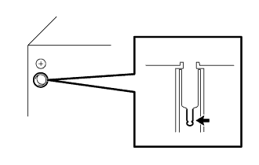

HỆ THỐNG NGHE NHÌN > Không thể bắt được sóng Rađiô (bắt sóng yếu) |
| 1.KIỂM TRA CHỨC NĂNG TÌM KIẾM TỰ ĐỘNG CỦA RAĐIÔ |
Tiến hành dò sóng rađiô tự động và kiểm tra rằng các chức năng của nó bình thường.
|
| ||||
| NG | |
| 2.KIỂM TRA CÁC BỘ PHẬN LẮP THÊM |
Kiểm tra xem có ăng ten và các bộ phận lắp thêm khác có được lắp trên xe không?.
|
| ||||
| NG | |
| 3.KIỂM TRA ĂNG TEN XEM CÓ TẠO RA TIẾNG ỒN |
Khi khoá điện ở vị trí ACC, hãy bật rađiô và chọn chế độ AM.
Hãy đặt đầu tô vít lên ăng ten và kiểm tra rằng có thể nghe thấy tiếng từ loa.
|
| ||||
| NG | |
| 4.KIỂM TRA BỘ THU SÓNG RAĐIÔ (ĂNG TEN) |
|  |
Tháo nút ăng ten ra khỏi bộ thu sóng Rađiô.
Với giắc của bộ thu sóng đang nối, hãy bật khoá điện lên vị trí ACC.
Bật rađiô và chọn chế độ AM.
Đặt một tô vít 2 cạnh hoặc một miếng kim loại, như một dây mỏng, lên ăng ten của bộ thu sóng rađiô. Kiểm tra rằng có thể nghe thấy tiếng từ các loa.
|
| ||||
| OK | ||
| ||